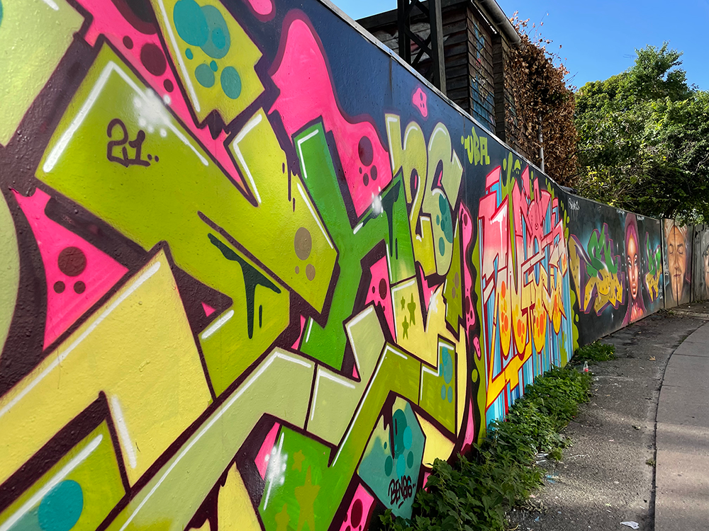
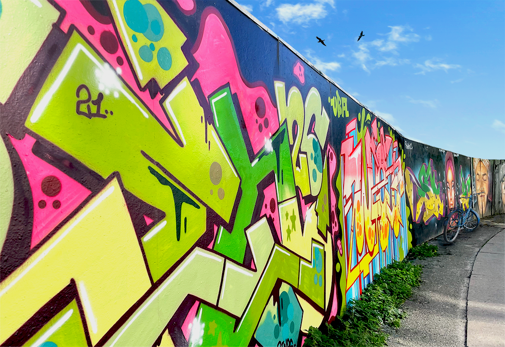

Flow 1 - Billedebehandling & Adobe XD
Vi har i dette flow arbejdet med billedebehandling i Photoshop. Vi havde til opgave at redigere i et billede vi selv havde taget.
Fokuspunkter
- Digital billedbehandling
- Prototyping
- Portfolio og projektdokumentation
- Designteori
Programmer anvendt
- Adobe XD
- Photoshop
Opgave Flow 1.1 - Billedebehandling
Opgavebeskrivelse
I denne opgave skulle vi tage billeder i København ud fra nogle bestemte emner.
Efterfølgende skulle vi hjem og billedebehandle disse billede i photoshop.
Nogen af de ting vi skulle gøre ved billedet var følgende:
- Ændre farverne
- Fjerne noget fra billedet
- Indsætte noget på billedet
Billeder fra opgaven
Nedenfor kan du se billederne fra photoshop opgaven.
Før billede
Efter billede

Jeg valgte dette billede af et hegn nær Christiania i København til at redigere i vores opgave.
Grunden til jeg valgte netop dette billede er jeg synes det havde flotte farver og tænkte der var meget at arbejde med.
Jeg har redigeret følgende ting på billedet:
- Farver
- Fjernet baggrunden
- Fjernet græs og pletter fra væggen
- Indsat fugle i himlen
- Indsat cykel på fortovet
Opgave Flow 1.2 - Mock-up portefølje
Opgavebeskrivelse opgave 1.2
I denne opgave skulle vi ved hjælp af adobe XD udarbejde en prototype af vores kommende portefølje
Få den fulde opgavebeskrivelse nedenunder.
Konceptudvikling
Til at udarbejde min portfolio har jeg gjort brug af konceptudvikling.
Vi havde på dette tidspunkt ikke haft meget om konceptudvikling
så der er derfor mere fokus på arbejdsgangen.
Jeg har sat et link til en PDF hvor der er mere om arbejdsgangen.
Designet
I forhold til designet af min portefølje vidste jeg at jeg ville have en lys og brugervenlig side.
Jeg valgte lyserød som mine farver da jeg synes dette var en let og venlig farve, fremfor feks en mørk og sort side.
Billeder af mock-up
Nedenfor er noget af min mock-up, men det fulde mock-up kan ses her